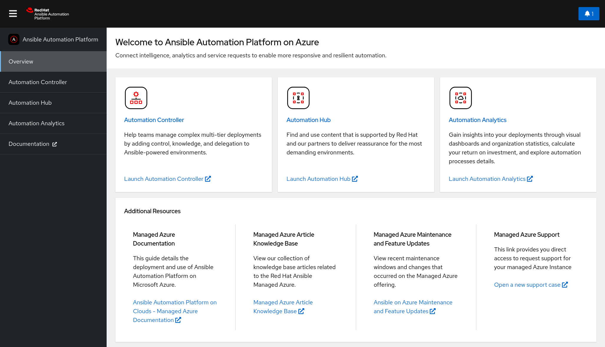

Making open source more inclusive
Red Hat is committed to replacing problematic language in our code, documentation, and web properties. We are beginning with these four terms: master, slave, blacklist, and whitelist. Because of the enormity of this endeavor, these changes will be implemented gradually over several upcoming releases. For more details, see our CTO Chris Wright’s message.
Providing feedback on Red Hat documentation
If you have a suggestion to improve this documentation, or find an error, you can contact technical support at https://access.redhat.com to open a request.
|
Important
|
Disclaimer: Links contained in this document to external websites are provided for convenience only. Red Hat has not reviewed the links and is not responsible for the content or its availability. The inclusion of any link to an external website does not imply endorsement by Red Hat of the website or their entities, products or services. You agree that Red Hat is not responsible or liable for any loss or expenses that may result due to your use of (or reliance on) the external site or content. |
1. Introduction to Ansible Automation Platform on Microsoft Azure
1.1. About Red Hat Ansible Automation Platform on Microsoft Azure
Red Hat Ansible Automation Platform on Microsoft Azure is a managed application that you can deploy from the Azure Marketplace portal to a resource group in your Azure tenant. Ansible Automation Platform on Microsoft Azure provides access to a library of Ansible content collections, and it is integrated with key Azure services, so you can start deploying, configuring, and managing infrastructure and applications quickly.
The following Red Hat Automation Platform components are available on Red Hat Ansible Automation Platform on Microsoft Azure:
-
Automation Controller
-
Automation Hub
-
Private Automation Hub
-
Ansible Content Collections, including the Microsoft collection for Azure
-
Automation Execution Environment
-
Ansible content tools, including access to Red Hat Insights for Red Hat Ansible Automation Platform
1.2. Application Architecture
Red Hat Ansible Automation Platform on Microsoft Azure is installed as a managed application. Red Hat manages both the underlying Azure resources and the software running on it while that infrastructure runs in your Azure tenant.
The managed application resource group is completely separate from other resource groups in your tenant. Red Hat only has access to the managed application resource group, with no visibility into other tenant resources.
For information about how this works and how resources and access are isolated from the rest of your Azure resources, refer to Azure managed applications overview in the Microsoft Azure managed applications guide.
Ansible Automation Platform on Microsoft Azure uses the following resource groups:
-
A new or existing resource group (RG) in your tenant. This resource group includes a single resource referring to the Ansible Automation Platform on Microsoft Azure managed application deployment. Red Hat has access to the managed app to perform support, maintenance, and upgrades, but the resource group is outside of Red Hat’s management.
-
A multi-tenant managed resource group (MRG) that contains most of the infrastructure needed to operate Ansible Automation Platform on Microsoft Azure. This multi-tenant resource group is shared between the Red Hat tenant and your tenant. Red Hat has full administrative control and you have read-only access to the resource group.
-
An AKS node pool resource group (NPRG). Microsoft requires the NPRG for AKS deployments. It contains resources that AKS uses to function. It is created on deployment, and it is outside of Red Hat’s management. Refer to Microsoft’s AKS documentation for more information about NPRGs.
|
Note
|
Do not interact with any resources in the node pool resource group (NPRG) unless explicitly directed to by the Red Hat Ansible Automation Platform on Microsoft Azure SRE team. Changes to resources in the NPRG cannot be protected by Red Hat and can cause irrecoverable damage to the application. Red Hat cannot restrict your ability to change or delete resources in the NPRG. |
When you install Ansible Automation Platform on Microsoft Azure, you choose whether the deployment is public or private. This affects how users can access the Ansible Automation Platform user interfaces.
Regardless of whether you choose a public or private deployment, you must configure network peering for outbound communication from Ansible Automation Platform to the private networks that contain resources that you want to automate against. You can configure network peering from Ansible Automation Platform on Microsoft Azure to your private Azure VNets and to on-premises or multi-cloud networks where transit routing with Azure exists.
1.2.1. Public deployment
Public deployments permit ingress to the Ansible Automation Platform on Microsoft Azure user interfaces over the public internet. Upon deployment, a domain name is issued to the Ansible Automation Platform on Microsoft Azure instance. No configuration is required to access Ansible Automation Platform. Users can navigate to the domain from the public internet and log in to the user interfaces.
The following diagram outlines the application resources and architecture that are deployed into the managed application resource group on a public deployment of Ansible Automation Platform on Microsoft Azure into your Azure subscription. The IP ranges change based on the networking address range you set on deployment.
1.2.2. Private deployment
A private deployment of Ansible Automation Platform resides in an isolated Azure VNet with no access from external sources: traffic to and from the public internet and other Azure VNets and subnets is blocked.
To access the URLs for the Ansible Automation Platform user interfaces, you must configure network peering.
Once peering and routing are configured, users can access Ansible Automation Platform through a VM on a connected Azure subnet, or directly if your organization has transit routing set up between Azure and your local network.
|
Note
|
No two Azure networking configurations are the same. To allow user access to your Ansible Automation Platform URLs, your organization will need to work with your Azure administrators to connect the private access deployment. |
The following diagram outlines the application resources and architecture that are deployed into the managed application resource group on a private deployment of Ansible Automation Platform on Microsoft Azure into your Azure subscription. The IP ranges change based on the networking address range you set on deployment.
1.2.3. Security
Ansible Automation Platform on Microsoft Azure follows security best practices from both Red Hat and Microsoft. The following resources describe the security posture of the application and the infrastructure.
-
Data encryption in flight and at rest
-
All Azure Storage Services enable server-side encryption by default using service-managed keys
-
All Azure hosted services are committed to providing Encryption at Rest options
-
All communications between services within AKS (for example, Ansible Automation Platform, Postgres, storage accounts) use TLS v1.2 or higher.
-
-
Password storage
-
The customer-supplied Ansible Automation Platform admin password is encrypted in transit. It is accessible to SREs from the kubernetes API and can be reset by the SREs upon customer request.
-
-
Keys generated with industry standards
-
Key installation, rotation
-
SSL/TLS traffic encryption
-
All communications between services within AKS (for example, Ansible Automation Platform, Postgres, storage accounts) use TLS v1.2 or higher.
-
All communications to Ansible Automation Platform UIs, either via the application gateway for public deployments or the nginx ingress for private deployments, use TLS v1.2 or higher.
-
-
API security
-
Any parts of the Ansible Automation Platform APIs that could leak any sensitive information are only accessible via authenticating as a known Ansible Automation Platform user and require that user to have the right level of authorization to use those APIs. In a private deployment, access to the Ansible Automation Platform APIs is only accessible to the customer via the route they choose to connect to the private deployment.
-
The Kubernetes API is private and only accessible from a private endpoint
-
Workload identity is enabled and it allows Kubernetes applications to access Azure cloud resources securely with Microsoft Entra ID.
-
-
Updates and patching
-
The Red Hat SREs regularly update the Kubernetes version, underlying node OS, and Ansible Automation Platform version to the latest available stable versions to get the latest features, bug fixes, and security fixes.
-
1.3. Disaster recovery
When you deploy Ansible Automation Platform on Microsoft Azure, you must enable or disable disaster recovery in the Business Continuity tab of the form.
There is no default setting for disaster recovery.
The disaster recovery feature incurs additional Azure infrastructure costs. See Azure infrastructure usage for details of the Service Shape of the Storage account.
If you want to enable disaster recovery on an existing instance of Ansible Automation Platform on Microsoft Azure, contact Red Hat customer support.
The disaster recovery feature creates a nightly backup of your managed application and stores it in a paired region that is geographically distant to your primary region. For information about regional pairings, refer to Azure cross-region replication pairings for all geographies in the Azure reliability documentation.
For information about recovering your application after a service-impacting event, see the Disaster recovery for Ansible Automation Platform on Azure article on the Red Hat customer portal.
1.4. Ansible Automation Platform on Microsoft Azure infrastructure usage
When you install Ansible Automation Platform on Microsoft Azure, the following infrastructure is deployed into your Microsoft Azure subscription:
- Managed identity
-
A Microsoft Azure service that enables Ansible Automation Platform components to communicate with other Microsoft Azure services such as database, DNS, storage, and other services.
- Key vault
-
A secure key vault used to store secrets that are unique to the Ansible Automation Platform deployment.
- Log Analytics Workspace
-
A Microsoft Azure service that enables Red Hat site reliability engineers to inspect the operations of Ansible Automation Platform on Microsoft Azure.
- Private DNS Zone
-
Manages local DNS requests for the services used by Ansible Automation Platform on Microsoft Azure.
- Storage account
-
The Microsoft Azure service is used for file and block storage such as local storage of projects and containers.
Service Shape:
-
StorageV2 - Standard_LRS if disaster recovery is not enabled
-
StorageV2 - Standard_GRS if disaster recovery is enabled
-
- Virtual network
-
The Microsoft Azure service is used to manage all internal networking and dependent services such as the Azure Application Gateway.
Service Shape: Application Gateway: WAF_v2
- Azure Kubernetes service (AKS)
-
The Kubernetes cluster used to deploy Ansible Automation Platform applications and services.
Service Shape for all AAP plan sizes:
-
Compute nodes: Standard_D4ds_v5 (4 vCPUs x 16 GiB)
-
Autoscaling minimum nodes: 3
-
Autoscaling maximum nodes: 20
-
- Azure Database for PostgreSQL
-
A Microsoft Azure database service used for Ansible Automation Platform’s PostgreSQL database. The following table presents the different configuration tiers based on the plan purchased.
AAP plan size (minimum node count)
Database shape configuration
Database storage
50
Standard_D2s_v3
512 GB
Provisioned 2,300; up to 3,500
400
Standard_D4s_v3
512 GB
Provisioned 2,300; up to 3,500
1000
Standard_D2s_v3
512 GB
Provisioned 2,300; up to 3,500
2500
Standard_D2s_v3
512 GB
Provisioned 2,300; up to 3,500
5000
Standard_D2s_v3
1 TB
5000
10000
Standard_D2s_v3
1 TB
5000
Exact infrastructure usage depends on the length of time that the managed application is deployed in your tenancy, and the automation requirements that might cause the Kubernetes cluster to autoscale to meet the demands of your workload.
Microsoft provides a Pricing calculator to estimate your costs for Microsoft Azure products and services. Red Hat has configured an example scenario in the pricing calculator: use the Red Hat Ansible Automation Platform on Azure Infrastructure Estimate to tune Kubernetes expected auto scaling variables based on your organization’s workloads.
If Red Hat determines that a deployment’s automation might exceed the capabilities of the current tier of the deployment, then Red Hat SREs will work with you to upgrade the infrastructure tier based on automation needs.
1.5. Lifecycle management
Red Hat Ansible is responsible for the monitoring, health, and maintenance of the underlying services and Ansible Automation Platform on Microsoft Azure core systems as well as the operation of Ansible Automation Platform on Microsoft Azure itself. This includes lifecycle management of the components.
1.6. Ansible Automation Platform on Microsoft Azure scaling
Ansible Automation Platform on Microsoft Azure default configuration of Microsoft Azure cluster autoscaler for autoscaling, with the following settings to limit the number of nodes:
-
Minimum Nodes: 3
-
Maximum Nodes: 20
1.7. Migration
Red Hat does not provide a solution to migrate existing deployments to Ansible Automation Platform on Microsoft Azure.
2. Installing Red Hat Ansible Automation Platform on Microsoft Azure
2.1. Prerequisites
-
A subscription for Microsoft Azure.
-
Contributor or Administrator access to that Azure subscription.
-
Access to the Azure CLI.
-
An account on the Red Hat Red Hat Customer Portal (access.redhat.com).
-
A specific subscription entitlement for Red Hat Ansible Automation Platform.
2.1.1. Azure resource quotas and infrastructure limits
Microsoft imposes resource limits within each Azure region. The CPU limit is the most likely to impact Red Hat Ansible Automation Platform on Microsoft Azure.
Before you install Ansible Automation Platform on Microsoft Azure, ensure that you have capacity to deploy the managed application into your desired region. Refer to Azure infrastructure usage for infrastructure requirements.
Regional vCPU limits
The Azure resources used during the deployment of the managed application temporarily exceed the resource requirements in Azure infrastructure usage.
The Total Regional vCPUs quota is temporarily consumed when deploying the managed application.
Every Azure region has a separate Total Regional vCPUs quota.
To prevent installation failure, ensure that you have at least 80 DS2_V3 vCPUs available in the Azure region where you want to deploy the managed application.
The following steps describe how to view the resource quotas for your subscription the Azure console:
-
In the Azure console, search for Quotas and open the My Quotas page.
-
Select the region where you wish to deploy the managed application to view your allocation and usage metrics for that region. Ensure that you have selected a single region. Viewing all regions at once will not show the limitations of a single Azure region.
Regional StandardCore limits
The StandardCore limit is a compute metric for the resources that are temporarily consumed when deploying the managed application.
It is possible that the Ansible Automation Platform on Microsoft Azure can deploy without hitting the StandardCore limit.
When a deployment fails because the consumed resources hit the StandardCore limit, the error message includes container group quota 'StandardCores' exceeded:
code: DeploymentFailed
message:
At least one resource deployment operation failed. Please list deployment operations for details.
Please see https://aka.ms/DeployOperations for usage details.
details:
- code: DeploymentScriptContainerGroupInvalidSettings
message:
Resource type 'Microsoft.ContainerInstance/containerGroups'
container group quota 'StandardCores' exceeded in region 'eastus'.
Limit: '10', Usage: '10' Requested: '1'.
The StandardCore metric is not displayed in the My Quotas page in the Azure console. To request the value of your regional limit, contact Microsoft directly.
If your deployments fail because the consumed resources reach this limit, you must submit a resource increase request for StandardCore to Microsoft.
Only submit a quota increase request if you encounter a deployment failure due to this issue.
Use the following information to respond to questions from Microsoft support:
- Will the container groups be run in Linux or Windows?
-
Linux
- What will the core and memory be in your Container Group instance?
-
Red Hat recommends 20 cores, 16 GB
- When will you create all the Container Group Instances?
-
During managed application deployment of Red Hat Ansible Automation Platform on Microsoft Azure
- How frequent will you create/delete the container groups?
-
Only during managed application deployment of Red Hat Ansible Automation Platform on Microsoft Azure
2.1.2. Azure resource providers
Microsoft uses Azure resource providers as a set of REST operations that enable functionality for a specific Azure service in an Azure subscription. For example, the Key Vault service consists of a resource provider named Microsoft.KeyVault. The resource provider defines REST operations for managing vaults, secrets, keys, and certificates.
The resource provider defines the Azure resources you can deploy in your Azure subscription.
Required Azure Resource Providers
Red Hat Ansible Automation Platform on Microsoft Azure installation requires specific Azure Resource Providers registered in your Azure subscription before you attempt a new installation:
"Microsoft.Compute" "Microsoft.ContainerService/" "Microsoft.DBforPostgreSQL/" "Microsoft.KeyVault/" "Microsoft.ManagedIdentity/" "Microsoft.Network/" "Microsoft.OperationalInsights/" "Microsoft.OperationsManagement/" "Microsoft.Resources/" "Microsoft.ResourceGraph" "Microsoft.Storage/" "Microsoft.Solutions"
Registering Azure Resource Providers
To register Azure Resource Providers, follow the instructions in the How to manage resources section of the Azure documentation.
2.1.3. Network
When you deploy Ansible Automation Platform on Microsoft Azure, you can configure the following networks in the Networking tab of the form:
-
The networking address range (CIDR block) for the VNet that your Ansible Automation Platform on Microsoft Azure application uses.
-
AKS network CIDR blocks.
|
Note
|
Plan your networking configuration before you deploy the Ansible Automation Platform on Microsoft Azure application, because you cannot change it after deployment. |
VNet CIDR blocks
You can configure the networking address range (CIDR block) for the VNet that your Ansible Automation Platform on Microsoft Azure application uses.
You set the CIDR block for the application in the Configure virtual networks section of the form when you deploy Ansible Automation Platform on Microsoft Azure.
When you are planning your network configuration, bear the following in mind:
-
The managed application requires at least a /24 Vnet that is divided into four subnets. The subnets have minimum address spacing.
Networking entity Minimum CIDR Block VNet
/24
Cluster subnet
/26
Gateway subnet
/28
Database subnet
/28
Private link subnet
/28
-
Ensure that the VNet range you configure does not intersect with the default CIDR block for AKS clusters (10.0.0.0/16). The Azure user interface does not prevent you entering this range, but using the default AKS CIDR block for your VNet causes networking issues.
-
To ensure successful network peering and communication between Ansible Automation Platform on Microsoft Azure and your existing networks, your enterprise network ranges must not overlap with the VNet network range.
-
If you do not have any existing Azure VNets, the Azure user interface suggests a default CIDR block and range for the VNet. Do not accept these defaults. Instead, use the network configuration that you have planned.
For information about planning the network address range and completing the networking configuration form on deployment, refer to Red Hat Ansible Automation Platform on Microsoft Azure VNet Preparation.
AKS CIDR Blocks
You can configure the AKS network CIDR blocks. Traffic that originates from the AKS cluster will appear to come from the range configured in AKS, not from the VNET.
When you are planning your AKS CIDR block configuration, bear the following in mind:
-
Ensure that these network ranges do not overlap with any existing network range in your enterprise network.
-
Do not use the following reserved network ranges:
AKS Reserved CIDR Blocks 169.254.0.0/16
172.30.0.0/16
172.31.0.0/16
192.0.2.0/24
172.17.0.1/26
You can configure the AKS network CIDR blocks in the Configure AKS networks area of the networking tab.
Do not accept the default values suggested in the Azure user interface.
Instead, use the CIDR blocks that you have planned.
The settings have the following requirements:
Network |
Description |
Requirements |
Service CIDR |
A CIDR notation IP range from which to assign service cluster IPs. It must not overlap with any Subnet IP ranges. |
Requires a /24 block at minimum. A larger block is not necessary. This CIDR block must not intersect with the CIDR of the Pod CIDR block. This CIDR block also must not intersect with the CIDR of the VNET CIDR block. |
DNS Service IP |
An IP address assigned to the Kubernetes DNS service. It must be within the Kubernetes service address range specified in |
Must be an IP address in the Service CIDR other than the first IP in that range. Red Hat recommends using the first |
Pod CIDR |
A CIDR notation IP range from which to assign pod IPs when kubenet is used. |
Requires a /19 or larger block. Red Hat recommends using the first |
2.1.4. Creating a service principal
To enable the Ansible Automation Platform application to access and manage Azure resources, you must provide authorization credentials after deployment. The Microsoft Azure collection supports service principal authentication.
To create a service principal, you must have administrator privileges with tenancy-wide permissions on your Azure tenant. Your Ansible Automation Platform on Microsoft Azure deployment will be provisioned in the same Subscription ID as the service principal created in this step.
-
Navigate to the Azure portal and click the Cloud Shell icon to open a bash Cloud Shell in your browser.
-
Set the Azure CLI to use the subscription that you intend to use for automating Azure services. Run the following command from the shell:
az account set --subscription <your_subscription_id>
-
Run the following command using the Azure CLI to create a privileged service principal in Microsoft Entra ID:
az ad sp create-for-rbac --name ansible --role Contributor
The output displays the appID and tenant keys for the service principal:
{ "appId": "xxxxxxx-xxx-xxxx", "displayName": "ansible", "name": "xxxxxxx-xxx-xxxx", "password": "xxxxxxx-xxx-xxxx", "tenant": "xxxxxxx-xxx-xxxx" } -
Store the service principal details securely, as they are displayed only when you create the secret. You will need them when you deploy Automation controller.
Maintaining your service principals
Service principal credentials have a limited lifetime that is set in your Microsoft Entra ID configuration. Track the lifespan of the service principal if you intend to automate against Azure for an extended period of time. You can create a new one when needed.
To view records of updated or deleted service principles, run the following Azure CLI command:
az ad sp list -o table | grep ansible
This command does not display the secrets for your service principals. Delete the service principal and create a new one if the secret is lost.
When you create a new service principal to replace an expired or deleted one, you must update the credential that uses the service principal that you are replacing. If the credential is not updated, automations that use that credential will fail.
2.2. Deploying Ansible Automation Platform from Azure Marketplace
2.2.1. Locating Ansible Automation Platform in Azure Marketplace
-
In a browser, navigate to the Azure Marketplace.
-
Click Private Products from the menu on the left of the screen.
-
Search for Red Hat Ansible Automation Platform.
-
Click the card that is returned in the search. Be sure to select the official offering from Red Hat.
-
Click Get it Now.
-
Click Continue.
-
The Overview tab contains important information about activating your subscription for Ansible Automation Platform.
-
Read the entire Before you begin section.
-
Follow the Click here link to enable your subscription. You cannot use Ansible Automation Platform without a valid subscription.
-
-
Return to the Overview tab and click Create to initiate the deployment process.
2.2.2. Provisioning Red Hat Ansible Automation Platform on Microsoft Azure
When you initiate the deployment of the Red Hat Ansible Automation Platform managed app from Azure marketplace, a form is displayed in the Create Red Hat Ansible Automation Platform on Microsoft Azure window.
Before you fill in the form, decide whether you want to create a public or private deployment of Ansible Automation Platform on Microsoft Azure:
-
Public deployments allow ingress to the Ansible Automation Platform on Microsoft Azure user interfaces over the public internet. No configuration is required to access the application URLs.
-
Private deployments are created in an isolated Azure VNet that blocks access from the public internet. To access Ansible Automation Platform on Microsoft Azure user interfaces, you must configure network peering and routing.
You create the network configuration for the Ansible Automation Platform on Microsoft Azure VNet when you initiate the deployment. Refer to your network configuration plan before deploying the managed application. For information about planning your network configuration, see Network.
Complete the form to provision Red Hat Ansible Automation Platform infrastructure and resources into your Azure tenant.
-
Click the Basics tab and enter values for your deployment in the following fields in the form:
-
Subscription: Select Ansible on Clouds.
-
Resource Group: Create or select a resource group where you want to deploy the managed application.
-
Region: The Azure region where the application will be deployed.
-
Application Name: A unique name for the managed application.
-
Administrator Password: Create an adminstrator password for your deployment.
The Administrator Password must contain at least 8 characters, and must include uppercase letters, lowercase letters, and numbers.
-
Confirm Administrator Password: Confirm the Administrator Password.
-
Access: Choose whether your deployment will be public or private.
-
Managed Resource Group: A resource group for the managed application infrastructure.
Keep this resource group isolated from other resource groups, including the Resource Group where you will deploy the managed application.
-
-
Store the information that you entered in the form in a secure place. You will need to provide the Administrator password to access automation controller and private automation hub.
-
Click Next
-
Follow the steps in Red Hat Ansible Automation Platform on Microsoft Azure VNet Preparation to configure your network configuration.
-
Click Next.
-
Click the Business continuity tab.
-
From the Disaster Recovery list, select an option to enable or disable disaster recovery.
-
Select the Deployment tab.
-
Note the following requirements in the description:
-
You must have a Red Hat account.
-
To use Ansible Automation Platform, you must have a valid subscription linked to your Red Hat account.
-
You must use the Deployment Driver during deployment.
-
-
Select the checkboxes to indicate that you understand these requirements.
-
Click Review + Create.
-
If the information you entered in the form is valid, the window displays Validation Passed.
-
Select I agree to accept the Co-Admin Access Permissions terms and conditions.
-
Click Create to begin the provisioning process for the application.
The application will begin provisioning.
You can use the deployment engine to view the progress of your deployment a few minutes after the Azure console displays "Your deployment is complete". See Monitoring deployments on the Ansible Automation Platform Deployment Engine for more information.
It may take 30 minutes or longer for the infrastructure and software to fully provision.
Once provisioning is complete, you can access and login to your new Ansible Automation Platform instance and launch automation controller and automation hub.
2.2.3. Monitoring deployments on the Ansible Automation Platform Deployment Engine
The deployment engine displays information about your Ansible Automation Platform on Microsoft Azure deployment. You can monitor the progress of the deployment, restart failed deployment steps, and cancel the deployment.
When you begin deploying Ansible Automation Platform on Microsoft Azure, the Azure interface displays the Overview page for the deployment. The Overview page displays the deployment status.
-
When the status in the Overview page shows "Your deployment is complete", navigate to the deployed managed application.
-
Click Parameters and Outputs in the Settings menu for the deployed managed application.
Approximately 10 minutes into the deployment process, the Outputs section of the Parameters and Outputs page displays a link to the
deploymentEngineUrl. -
Copy the link and paste it in another browser tab to open the login page for the deployment engine.
-
Login to the deployment using the following credentials:
-
Username: admin
-
Password: Use the Administrator Password that you chose when configuring your deployment.
-
-
The deployment driver displays a message indicating that your deployment is underway. Click Log in with Red Hat account. The Red Hat login page opens.
-
In the Red Hat login page, enter your credentials if you already have a Red Hat account.
If you do not have a Red Hat account, click Register for a Red Hat account to create one.
After logging in with your Red Hat account, the Ansible Automation Platform Deployment Engine page opens.
Ansible Automation Platform Deployment Engine interface
The Ansible Automation Platform Deployment Engine displays a list of the steps in the deployment process. A progress bar shows how far along the deployment is. Icons indicate the steps that have been completed, the steps that are in progress, and steps that have failed.
To view extended information about a step that failed, click on the failed icon for that step.
To restart a failed step, click Restart Step.
2.2.4. Canceling Red Hat Ansible Automation Platform on Microsoft Azure deployments
You can gracefully cancel a Red Hat Ansible Automation Platform on Microsoft Azure deployment.
-
Login to the deployment engine to display the progress of the deployment steps in the Ansible Automation Platform Deployment Engine page. Refer to Monitoring deployments on the Ansible Automation Platform Deployment Engine for information on accessing and logging into the Ansible Automation Platform Deployment Engine page.
-
To cancel the deployment, click Cancel Deployment and confirm.
This action cancels all the remaining steps in the deployment, including the currently running step. It also cancels pending steps in the deployment.
The status for the steps that have not been executed updates to Canceled. To view the deployment processes on Azure, navigate to the Overview page for the managed resource group in which you deployed Ansible Automation Platform and select Deployments.
ImportantCanceling the deployment does not delete the managed application from your Azure subscription. To avoid incurring costs for the managed application and other resources that are still running, you must delete them.
-
To delete Azure resources, navigate to the resource group for your deployment in the Azure portal. Select the resources you want to delete and click Delete. For more information about deleting resources, refer to Manage Azure resources by using the Azure portal in the Microsoft Azure documentation.
2.3. Accessing Red Hat Ansible Automation Platform on Microsoft Azure
2.3.1. Post-deployment prerequisites
Private network peering
Ansible Automation Platform on Microsoft Azure is deployed into an independent managed resource group with its own Azure virtual network (VNet).
When initially deployed, Ansible Automation Platform on Microsoft Azure’s VNet can only send requests to external networks through the public internet.
To enable Ansible Automation Platform on Microsoft Azure to access resources in an internet-gapped deployment, when access to resources has to happen over private networks, you must configure Azure network peering between your private virtual networks and Red Hat Ansible Automation Platform on Microsoft Azure’s managed application VNet.
You can configure your Azure VNets to enable private communication between multiple Azure VNets as well as private transit routing between Azure VNets and external VPN routed networks. These VPN networks can be on-premises or on other clouds.
No two Azure networking configurations are the same. To enable user access to Ansible Automation Platform on Microsoft Azure, work with your Azure administrators to connect your deployment to your VNets and external VPN routed networks.
|
Note
|
Network peering must be configured by Azure administrators in your organization who are familiar with Azure networking. Configuring network changes to your Azure account can cause outages or other disruptions. The network peering procedures described in this document are not supported by Red Hat, as the processes and services are controlled and managed by Microsoft Azure. Contact Microsoft for assistance in peering Azure networks. While every effort has been made to align with Microsoft’s documentation for this content, there may be drift in accuracy over time. Microsoft’s documentation is the definitive source for information about networking topics for Azure. |
Azure offers different ways to peer private networks. These are typically divided into two categories:
-
Hub-and-spoke peering: In this topology, there is a centralized hub VNet that other virtual networks peer with. This hub network has mechanisms to route traffic through transit routing. Cloud networks, including VPN/Express Connect connections with on-premises and other cloud networks, can communicate through the hub VNet.
-
Azure Virtual WAN (VWAN): Azure Virtual WAN is a networking service that provides simplified hub-and-spoke network modeling across Azure, on-premises, and other VPN/Direct Connect networks. For more about VWAN, refer to Microsoft’s Virtual WAN documentation.
-
Direct peering: Private networks are individually connected to one another with no routing hops between them. This is a simpler peering model: it is useful when you only want to connect a few networks.
Refer to Choose between virtual network peering and VPN gateways in the Microsoft Application architecture fundamentals guide to determine the correct peering approach for your organization.
Hub-and-spoke peering (Transit routes)
|
Note
|
Updating route tables incorrectly can break your network. Only execute the steps in these procedures if you are confident that you can reverse any unexpected network behavior. |
-
You have deployed Ansible Automation Platform on Microsoft Azure.
-
You have configured and tested an Azure VNet hub-and-spoke implementation in your Azure tenant. This prerequisite requires many Azure resources to be configured, including a Virtual Network Gateway.
-
You have configured transit routing between your spoke networks, including your VPNs. Refer to Configure VPN gateway transit for virtual network peering in the Microsoft Azure documentation for instructions.
-
You have identified the following:
-
The CIDR block(s) of your existing VNets (including VPNs & direct connects) that will need access to Ansible Automation Platform on Microsoft Azure UIs.
-
The CIDR block(s) of your existing VNets (including VPNs & direct connects) that will contain hosts or endpoints for Ansible automation.
-
The CIDR blocks of the Ansible Automation Platform on Microsoft Azure VNet from the managed resource group of the application. Refer to Finding the CIDR Block of the managed resource group for instructions.
-
Before peering any networks, ensure that there is no network address space overlap between your private VNets and your Ansible Automation Platform on Microsoft Azure network.
-
Find the CIDR Block for the Ansible Automation Platform on Microsoft Azure managed application Kubernetes cluster. See Finding the CIDR Block of the managed application Kubernetes cluster.
-
Configure Network Peering with the Ansible Automation Platform Subnet. See Configuring Network Peering with the Ansible Automation Platform Subnet.
-
Update the route tables:
-
Configure route tables from your existing networks to send traffic to the managed application CIDR. You must add routes to the routing tables of every network requesting Ansible Automation Platform user interfaces and of every network that will have automation performed against its resources. See Routing to Ansible Automation Platform on Microsoft Azure.
-
Configure routing to your VNets for each spoke network that you would like Ansible Automation Platform to communicate with, for automation or for accessing the user interfaces. See Routing to your VNets.
-
-
Navigate to the Resource Groups page in the Azure portal.
-
Click the managed resource group for Red Hat Ansible Automation Platform on Microsoft Azure. The resource group name is prefixed with “-mrg”.
-
Select the VNet within the resource group to view its settings in the Overview page.
The CIDR block of the cluster is displayed in the Address Space.
For further information, refer to View virtual networks and settings in the Microsoft Azure Virtual network guide.
Within the Azure console, the Azure virtual network (VNet) is known as this virtual network, and the VNet that you want to peer with is known as remote virtual network.
In the Virtual Networks page in the Azure portal, use the following settings to configure peering between the Azure VNet and the VNet that you want to peer with the Ansible Automation Platform on Microsoft Azure app:
-
Under This virtual network, select settings for the Ansible Automation Platform on Microsoft Azure virtual network:
-
Peering link name: <hub_to_aap_peering_link_name>
-
Traffic to remote virtual network: Allow
-
Traffic forwarded from remove virtual network: Allow
-
Virtual network gateway or Route Server: Use this network’s gateway or Route server
-
-
Under Remote virtual network, select settings for the virtual network that you want to peer with Azure:
-
Peering link name: <aap_to_hub_peering_link_name>
-
Traffic to remote virtual network: Allow
-
Traffic forwarded from remote virtual network: Allow
-
Virtual network gateway or Route Server: Use the remote virtual network’s gateway or Route server
-
For further information on configuring peering, refer to Create a peering in the Microsoft Azure Virtual network guide.
Before you update the route tables, confirm that you satisfy the prerequisites for the hub-and-spoke peering process.
-
Navigate to Route Tables in the Azure portal.
-
As part of your hub-and-spoke configuration, you created one or more route tables to define the routes between the networks. Click on one of these route tables.
-
From the route table menu bar, click Routes > Add.
-
Configure routes from your existing networks to send traffic to Ansible Automation Platform. You must configure routes for any network requesting Ansible Automation Platform user interfaces and for any network that will have automation performed against its resources. For each route that you add, enter the following information:
-
Route name: Enter a route name for the Ansible Automation Platform managed application network
-
Address Prefix: The CIDR block of the managed application kubernetes cluster
-
Next Hop Type: Virtual network gateway
-
-
Click OK to save the new route to the route list.
Repeat this procedure for all other route tables where you want to route traffic to Ansible Automation Platform.
Add a route for each spoke network that you would like Ansible Automation Platform to communicate with, for automation or for accessing the user interfaces.
-
Navigate to Route Tables in the Azure portal.
-
In the list of route tables, select the route table for the Ansible Automation Platform on Microsoft Azure managed application.
The name of the Ansible Automation Platform route table uses the following convention:
aks-agentpool-<numbers>-routetable
-
From the route table menu bar, click Routes > Add.
-
Configure routing to your VNets for each spoke network that you would like Ansible Automation Platform to communicate with, for both automation or accessing the user interfaces.
-
For each route that you add, enter the following information:
-
Route name: Enter a route name for the spoke network that you want Ansible Automation Platform to route to
-
Address Prefix: The CIDR block of the spoke network
-
Next Hop Type: Virtual network gateway
-
-
Click OK to save the new route to the route list.
After you have configured the routing rules, traffic is routed to and from Ansible Automation Platform on Azure through your hub network.
If your organization uses Azure firewall services or third-party firewall appliances through a Virtual Appliance connection, you must configure outbound connectivity from the managed application, to enable Red Hat to maintain your application and to enable automation against external resources.
The easiest way to implement this is to create a firewall rule that allows all outbound traffic from port 443.
If you choose not to allow all outbound traffic from port 443, you must configure routes.
-
For Red Hat to manage and upgrade Ansible Automation Platform on Microsoft Azure and execute security patching, any machine in the Azure Kubernetes service (AKS) cluster must be allowed to submit a request to pull updates for containers used by Ansible Automation Platform.
Add routes in the Ansible Automation Platform route table for outbound traffic from the full CIDR range of the Ansible Automation Platform on Microsoft Azure managed application to the domains listed in the Azure Virtual Appliance Routing with Ansible Automation Platform on Azure article on the Red Hat Customer Portal.
-
You must also allow traffic from your firewall to any other external domain or IP address that you want Ansible Automation Platform to run automation jobs against. Otherwise, your firewall will block connectivity between Ansible Automation Platform and destinations for automation.
-
Ansible Automation Platform requires a public DNS zone to provide SSL certificates. This public DNS zone is in the managed resource group of the deployment. The platform must be able to communicate via DNS queries with the servers listed in the DNS zone to complete certificate challenges with our upstream provider. Blocking this communication prevents successful certificate renewal.
For further information about adding routes to a route table in Azure, refer to Create a route in the Microsoft Azure Virtual network guide.
Azure Virtual WAN (VWAN)
Before peering, you must connect a hub network, and at least one spoke network, to the hub network of the Azure VWAN to which you intend to connect Ansible Automation Platform on Microsoft Azure.
-
A pre-configured Azure VWAN.
-
One or more of the following connections to the VWAN:
-
A DMZ network that contains Azure virtual machines that users can remotely log into to access Ansible Automation Platform on Microsoft Azure.
-
A DMZ network that contains an Azure virtual machine that local machines can connect to with SSH tunneling to access Ansible Automation Platform on Microsoft Azure.
-
A VPN or Direct Connect service to your local network that routes traffic from local machines to Ansible Automation Platform on Microsoft Azure.
-
-
Navigate to the Virtual Network Connections page for the VWAN that you want to peer with your Ansible Automation Platform instance.
-
To create a connection between the VWAN hub and your Ansible Automation Platform instance, use the following settings:
-
Connection Name: <Ansible_Automation_Platform_connection_name>
-
Hubs: Select one or more VWAN hub networks that the managed application VNet will peer with.
-
Subscription: Select the subscription where Ansible Automation Platform on Microsoft Azure has been deployed.
-
Resource group: The managed resource group of the managed application. It is typically prefixed with “mrg-”.
-
Virtual network: The VNet of the managed application. There is only one VNet in the managed resource group.
-
Propagate to none: No
-
Associate Route Table: Select the default route table or the appropriate route table that your organization has configured for VWAN.
-
Propagate to Route Tables: Select one or more default route tables or the appropriate route table that your organization has configured for VWAN.
-
Propagate to labels: Select labels if your organization uses them.
-
Static routes: Do not complete this field.
-
When network peering completes, traffic routes to and from Ansible Automation Platform on Microsoft Azure though your VWAN hub network.
-
Connect a virtual network to a Virtual WAN hub - portal (Microsoft Azure Virtual WAN documentation)
Direct peering
You can use direct peering to directly connect virtual networks. When two networks are peered, Azure updates routes between them so that traffic automatically flows between them.
The direct peering method is easier to configure than the hub-and-spoke model. However, the number of direct network peerings is limited. Direct peering becomes difficult to manage as the number of virtual networks grows, because each new network requires peering to all other networks.
You can configure network peering between your Azure network and your VNet in the Virtual Networks page of the Azure Portal.
Within the Azure console, the Azure virtual network is known as this virtual network, and the VNet that you want to peer with is known as remote virtual network.
In the Virtual Networks page in the Azure portal, use the following settings to configure the Azure network and the VNet that you want to peer with the Ansible Automation Platform on Microsoft Azure app:
-
Under This virtual network, select settings for the Ansible Automation Platform on Microsoft Azure virtual network:
-
Peering link name: <hub_to_aap_peering_link_name>
-
Traffic to remote virtual network: Allow
-
Traffic forwarded from remote virtual network: Allow
-
Virtual network gateway or Route Server: Use this network’s gateway or Route server
-
-
Under Remote virtual network, select settings for the virtual network that you want to peer with Azure:
-
Peering link name: <aap_to_hub_peering_link_name>
-
Subscription: Select the subscription where Ansible Automation Platform on Microsoft Azure has been deployed
-
Virtual network: Select the Ansible Automation Platform on Microsoft Azure virtual network: vnet-<aap_identifier>-<region>
-
Traffic to remote virtual network: Allow
-
Traffic forwarded from remote virtual network: Allow
-
Virtual network gateway or Route Server: Use the remote virtual network’s gateway or Route server
-
After you have configured direct network peering, traffic routes between Ansible Automation Platform on Microsoft Azure and private hosts and IPs on your Vnet.
For more detailed instructions for configuring peering, refer to Create a peering in the Microsoft Azure Virtual network guide.
For further information on direct peering, refer to Virtual network peering in the Microsoft Azure Virtual network guide.
2.3.2. Accessing Red Hat Ansible Automation Platform on Microsoft Azure
When you initiate the deployment of the Red Hat Ansible Automation Platform managed app from Azure marketplace, a form is displayed in the Create Red Hat Ansible Automation Platform on Microsoft Azure window. Complete the form to provision Ansible Automation Platform infrastructure and resources into your Azure tenant.
-
In a web browser, navigate to Managed Applications in the Azure console.
-
Select the instance of Red Hat Ansible Automation Platform on Microsoft Azure that you deployed.
-
Select Parameters and Outputs in the Settings section in the left navigation menu.
-
The Parameters and Outputs page contains a link to the Ansible Automation Platform Landing page. The Ansible Automation Platform Landing page is available after deployment completes. From the Ansible Automation Platform Landing page, you can access your automation controller and automation hub instance and view announcements and notifications. You do not have to login to view the Ansible Automation Platform Landing page.
-
The Parameters and Outputs page also displays direct links to the automation controller and automation hub.
-
-
Save the URL links for the Ansible Automation Platform Landing page, automation controller, and automation hub. The names for the links are automationControllerUrl, automationHubUrl, and landingPageUrl.
-
Open the Ansible Automation Platform Landing page.
Ansible Automation Platform Landing page
The Ansible Automation Platform Landing page is a convenient page for deployments of Ansible Automation Platform on Microsoft Azure. You can open the following views from the navigation pane:
- Overview
-
Links to automation controller, automation hub, and Automation Analytics.
 - Announcements
-
You can view notifications about your subscription and global notifications about maintenance, upgrades, and resource downtime, for both public and private deployments of Ansible Automation Platform on Microsoft Azure.
To view announcements, click the bell icon.
- Automation Controller
-
Displays links to the automation controller documentation.
To open the automation controller from this view, click Launch Automation Controller.
- Automation Hub
-
Displays links to the automation hub documentation.
To open the automation hub from this view, click Launch Automation Hub.
- Automation Analytics
-
Links to Automation Analytics documentation
- Documentation
-
Links to Red Hat Ansible Automation Platform on Microsoft Azure documentation.
Logging in to automation controller
-
In a browser, navigate to the automation controller URL, and then log in using the following credentials:
-
Username:
admin -
Password: Use the Administrator password you provided when you deployed the Ansible Automation Platform application.
The first time you login to Ansible Automation Platform on Microsoft Azure, you must configure a subscription and agree to the terms and conditions.
License association
Red Hat provided a specific subscription entitlement manifest when you subscribed to Red Hat Ansible Automation Platform on Microsoft Azure.
When asked to submit information about your license, select your license manifest file that you obtained from access.redhat.com.
Microsoft Entra ID SSO configuration
Follow the procedures below to configure SSO with Microsoft Entra ID. If your organization does not use Microsoft Entra ID for application authorization, you can create users in the user management system in Ansible Automation Platform.
-
In a browser, navigate to the Automation controller URL and log in using the following credentials:
-
Username:
admin -
Password: Use the Administrator password you provided when you deployed the Ansible Automation Platform application.
-
-
In the Automation controller console, click Settings in the menu options.
-
Click Miscellaneous System settings under the System settings.
-
Click Edit. Enter the Automation controller URL in the Base URl of the service field.
-
Click Save.
To set up enterprise authentication for Microsoft Entra ID, you must obtain an OAuth2 key and secret by registering your Ansible Automation Platform deployment in Azure.
To register the automation controller instance in Azure, you must supply the Azure AD OAuth2 Callback URL from the automation controller settings.
-
In a web browser, open the automation controller console.
-
Click Settings in the menu to open the main settings page.
-
Click Azure AD settings in the Authentication category to open the Details page.
-
Copy the value for Azure AD OAuth2 Callback URL. You will need this value when you register your deployed application in Microsoft Entra ID.
-
In a web browser, open the Azure portal.
-
Ensure that you are using the tenant where you deployed Ansible Automation Platform.
-
Type
Microsoft Entra IDin the search bar. -
Select Microsoft Entra ID from the search results.
-
Under Manage in the menu options, click App registrations.
-
In the App registrations page, click + New registration.
-
Configure the new registration as follows:
-
In the Name field, enter the same name that you used for the deployed application.
-
Select the default value for Supported account types.
-
Select Web for Redirect URI (optional).
-
In the Redirect URI (optional) field, enter the Azure AD OAuth2 Callback URL value that you fetched from automation controller.
-
-
Click Register to create the registration.
When registration is complete, the registration page for the Automation Controller application is displayed.
-
In the Automation controller application registration page on Azure, copy and save the value of Application (client) ID.
You will use this value for the Azure AD OAuth2 Key in the Ansible Automation Platform settings.
-
Under Manage, click Certificates & secrets.
-
Click Client secrets and then + New client secret.
-
Provide a description for the new secret.
It is not possible to automatically renew a certificate or identify when it is about to expire.
It is useful to include the date in the description, for example: AAP Client Secret <Today’s Date in YYYY-MM-DD format>.
-
Provide an expiration date for the new secret.
The maximum lifetime for the certificate is 2 years. Unless you have specific security needs that prevent the creation of a long term certificate, select an expiration date of 24 months.
-
Save the secret Value to a location on your local machine. Once you navigate away from this page it will be hidden and no longer retrievable.
Add the key (Application (client) ID) and value (Value) of the secret that you generated in Azure to your Ansible Automation Platform instance.
-
Open the automation controller console in a web browser.
-
Click .
-
Click Edit.
-
Enter the information for the secret that you generated in Microsoft Entra ID:
-
In Azure AD OAuth2 Key, paste the Application (client) ID.
-
In Azure AD OAuth2 Secret, paste the secret Value.
-
Click Save.
-
Open the automation controller in a web browser.
-
Under Resources, click Credentials.
-
Click Add to open the Create New Credentials page.
-
Enter a name for the new credential and select Azure Resource Manager for the credential type.
-
Use the Service Principal details to fill out the values of the form:
-
Name: Choose a descriptive name for the credential, for example *Azure Infrastructure*.
-
Subscription ID: Enter the subscription id where your resources created in Azure should be associated. This is unique to your tenant. Your organization may have multiple subscription ids; consult your Azure administrator regarding the subscription id that you should use.
-
Client ID: Enter the appId value from the Service Principal creation.
-
Client Secret: Enter the password from the Service Principal creation.
-
Tenant ID: Enter the tenant from the Service Principal creation.
-
-
Click Save to save the credential.
3. Connecting to Red Hat Ansible Automation Platform
When network peering is complete and your Azure routing configuration is established, you can choose how your team accesses Ansible Automation Platform through your Azure network configuration.
3.1. Access details
Regardless of whether Ansible Automation Platform was deployed with public or private access, a set of DNS records is created. The DNS records are created so that Ansible Automation Platform can be issued a valid TLS certificate for your deployment and to enable easy access to your applications.
To view a list of the URLs for the Ansible Automation Platform applications, navigate to the Parameters and Outputs page of the Azure Marketplace managed application listing for your deployment.
For more details about the Parameters and Outputs page, see Accessing Red Hat Ansible Automation Platform on Microsoft Azure.
3.2. Public Deployments
If you selected public access when you deployed Ansible Automation Platform on Microsoft Azure, you can access the Ansible Automation Platform application URLs over the public internet from a browser.
3.3. Private deployments
If you selected private access when deploying Ansible Automation Platform on Microsoft Azure, then the DNS record issued to the Red Hat Ansible Automation Platform on Microsoft Azure application points to a private address within the CIDR block selected when the managed application was deployed. You must configure access to this address after you have created network peering.
The configuration and access method that you choose to connect to Ansible Automation Platform on Microsoft Azure depends on how your organization manages Azure infrastructure. Your Azure administrators must determine the right model for your organization and configure the setup for you.
The following are the most common options:
3.3.1. Azure hosted virtual machine
A straightforward way to configure access for a small set of users to access private network resources on Azure networks is to create a jumpbox VM in a perimeter network (DMZ VNet) that users can remotely log into from the public internet. The jumpbox VM requires workstation features such as a GUI and browser.
Users can remotely log into the publicly accessible virtual machine from on-premises machines through VNC, RDP, or other screen-sharing protocols.
To access the Ansible Automation Platform web UIs on the Azure private network, users navigate to the URLs using the browser on the jumpbox VM.
The DMZ VNet is connected to other Azure VNets through network peering, with routing rules established to send network traffic to the Ansible Automation Platform VNet.
The following diagram shows the topology for an example configuration of private network access via an Azure virtual machine.
-
For more information about perimeter (DMZ) networks, refer to Perimeter Networks in the Microsoft Azure Cloud Adoption Framework documentation.
-
For more information about jumpboxes, refer to About Azure bastion host and jumpboxes in the Microsoft Azure Cloud Adoption Framework documentation.
3.3.2. VPN
If your organization requires that many users access Ansible Automation Platform over a private connection, or if your organization already uses VPNs or direct connections with Azure, then this approach might be suitable.
In this configuration, your on-premises infrastructure is connected to Azure through a Network Application Gateway and has routing rules that can enable access to Ansible Automation Platform to any connected computer on the local network. The VNet connected to the Virtual Network Gateway is connected to other Azure VNets through network peering, with routing rules established to send network traffic to the Ansible Automation Platform VNet.
With this configuration, users can access Ansible Automation Platform through the application URLs as if they were using the public access approach.
3.3.3. SSH tunnel
When VPN is not an option and your local users are more technical, the SSH tunnel approach is a secure alternative that enables users to access Ansible Automation Platform from a browser on a local machine.
To implement this access model, create a lightweight Linux-based SSH server in a DMZ network, similar to the Azure Hosted Virtual Machine method. The SSH server does not require any workstation features, because it simply acts as a proxy between a user’s local machine and Ansible Automation Platform on Microsoft Azure.
Each user must be configured as an SSH user on the server. Users can then establish an SSH tunnel from the local machine to the SSH server to route traffic for Ansible Automation Platform on Microsoft Azure.
This approach is easier to implement on Linux and macOS host machines, but can be accomplished on Windows.
-
Update your local hosts file so that the Ansible Automation Platform URLs route traffic to your local machine rather than the private IP that DNS records are configured with. Add the following line to your hosts file:
127.0.0.1 controller.<your_AAPonAzure_instance>.az.ansiblecloud.com
The following example shows the line in a hosts file:
## # Host Database # # localhost is used to configure the loopback interface # when the system is booting. Do not change this entry. # 127.0.0.1 localhost 255.255.255.255 broadcasthost ::1 localhost 127.0.0.1 controller.<your_AAPonAzure_instance>.az.ansiblecloud.com
-
As a user with root privileges, run the
sshcommand to establish an SSH tunnel.In the example below,
SSH_server_IPrepresents the IP address of the SSH server in your DMZ.sudo ssh azureuser@<SSH_server_IP> -i ~/.ssh/id_ssh_key -N -f -L 443:controller.<your_AAPonAzure_instance>.az.ansiblecloud.com:443
The
-Lflag makes your local system route traffic for the automation controller URL over port 443 (HTTPs).NoteYou must use port 443 on both sides of the routing path. Using a different port on the local machine causes some Ansible Automation Platform features to not function properly.
When the SSH tunnel is established and your Azure routing is configured, you can access the automation controller URL from your local browser at https://controller.<your_AAPonAzure_instance>.az.ansiblecloud.com.
4. Support
Red Hat Ansible Automation Platform on Microsoft Azure is a managed application, supported and maintained by Red Hat. Due to the architecture of the application and the deployment strategy in Azure, there are some situations where customizing and changing some aspects of the configuration could lead to a change in the responsibilities of some components.
As an Ansible Automation Platform on Microsoft Azure user, you can configure the Ansible Automation Platform network to peer your own network. By doing so, you can grant access from the Ansible Automation Platform instance to all the assets associated with your own network that you want to manage. Also, you can route all the Ansible Automation Platform traffic to your own Virtual Network Appliances to control, audit, or block traffic from the Ansible Automation Platform instance to the internet. To do this, you must consider the URLs that must be allowlisted for Ansible Automation Platform to work properly.
For more information about Azure Virtual Appliance Routing, see the Azure Virtual Appliance Routing with Ansible Automation Platform on Azure article on the Red Hat customer portal.
Ansible Automation Platform on Microsoft Azure uses Azure’s managed DNS services when deployed.
To use private DNS records that cannot be resolved publicly, you can either use Azure Private DNS zones that are peered to the managed application VNET, or you can make a submit request to Red Hat to submit DNS zones that should be forwarded to a customer-managed private DNS server.
A limitation of Private DNS zones is that only one instance of a given zone may be linked to a Virtual Network. Attempting to link zones that match the names of Private DNS zones in the managed resource group causes conflicts. Microsoft recommends consolidating DNS records into a single zone to work around this limitation.
You can replicate the records from the zones in the managed resource group into your own instance of the Private DNS zone. You can then unlink Private DNS zones in the managed resource group from the Virtual Network and replace it with your own instance of the Private DNS zone.
Failure to properly maintain the records in the Private DNS zone can prevent the managed application from operating.
The AKS Private DNS zone cannot be customer managed and still allow Red Hat to update or upgrade the managed AKS that is a part of this offering.
To allow Red Hat to upgrade the customer AKS to the latest version during the maintenance windows, do not unlink the <GUID>.privatelink.<region>.azmk8s.io Private DNS zone.
For more information on this limitation, see "CreateOrUpdateVirtualNetworkLinkFailed" error when updating or upgrading an AKS cluster in the Microsoft Azure documentation.
To work around this limitation, Red Hat allows you to manage A and CNAME records in the Private DNS zones in the managed resource group. Any records that you put in the Private DNS zones in the managed resource group are visible to the Red Hat SREs. If you decide to use the Private DNS zones in the managed resource group, you are responsible for updating them with the records you need. Customer supplied records are not backed up as a part of the disaster recovery process. Removing any Azure supplied records can cause network connectivity issues with Ansible Automation Platform on Microsoft Azure.
For more information about working with Private DNS zones, see Private DNS with Red Hat Ansible Automation Platform on Microsoft Azure on the Red Hat customer portal.
In some situations, using Azure Policy to enforce, for example, tagging rules and conventions, can adversely affect the Resource Group where the components of Ansible Automation Platform on Microsoft Azure reside. The enforcement of Azure Policy could prevent changes, impact operations, or block deployment of new components in the Resource Group. These situations are identified by Red Hat during maintenance or daily operations. You must exclude the enforcement of Azure Policy, for example by using exceptions, on resources associated with the managed application.
For more information about working with Azure Policy, see the Azure Policy and Ansible on Azure article on the Red Hat customer portal.
4.1. Limited support status
Customers may implement Azure infrastructure changes or policies that negatively affect the functionality of the service and Red Hat’s ability to monitor and service it. In such scenarios, the deployment can transition into a limited support status. A deployment may move to a limited support status for many reasons, including the following scenarios:
- Inactive Ansible subscription(s)
-
Red Hat issues subscription entitlements through the application deployment process. The entitlement expires one year after it is issued. Customers are emailed prior to expiration to renew the entitlement. This process will issue a new entitlement for the next year and can be imported into Ansible Automation Platform.
- Failure to renew
-
When an entitlement expires, customers can continue to use Ansible Automation Platform on Microsoft Azure. However, Red Hat support will require a valid entitlement before assisting with support issues.
- Changes to customized policies
-
Ansible Automation Platform on Microsoft Azure runs on infrastructure within a customer’s Azure tenant. This means that customer Azure policies can affect the deployment and function of the platform. Given the flexibility of Azure policy definitions, it is impossible to list all policies that can cause infrastructure or operational issues with the platform. When those events happen, the Red Hat SRE team can help identify the policy causing the issue, and suggested remediation. That remediation may require customer policy changes in order for the managed application to function correctly.
- Failure to remediate
-
When a policy conflict arises, the Red Hat team will attempt to reach out to the customer to remediate. Some of these changes are time sensitive and can impact the platform’s operational function. Red Hat SRE team maintenance and upgrades tasks will be on hold until the customer resolves the policy issues.
- Changes to firewall and network configurations
-
When configuring egress routes from Ansible Automation Platform on Microsoft Azure, customers are required to route traffic to a set of domains on the public internet used for the deployment, monitoring and maintenance of the platform.
- Failure to set up
-
The Ansible Automation Platform on Managed Azure will be in a state where it cannot be monitored or serviced by the Red Hat SRE team.
- Changes to quota limits
-
A prerequisite for Ansible Automation Platform on Microsoft Azure requires adequate capacity to deploy the managed application in the selected region. Microsoft imposes restrictions on limits (CPU) in each region. It is expected that the customers set up their infrastructure with the specifications as listed in the Product Documentation.
- Failure to remediate
-
As the Red Hat SRE team perform regular maintenance and improvements, the quota limitations in the region could prevent them to manage the deployment consistently and can eventually result in an inability to manage the offering.
- Incorrect CIDR ranges
-
During initial deployment, customers can configure networking address range (CIDR block) for the VNet the Ansible Automation Platform uses. Once configured, Azure does not allow CIDR blocks to be changed once a network is created, and so a change would requires a redeployment of the managed Ansible Automation Platform application with the configurations specified in the documentation.
- Failure to remediate
-
While the Azure user experiences allow customers to set CIDR blocks of choice, the use of the smaller CIDR ranges smaller than our guidelines can create the circumstance that your deployment is in limited supported state where the platform is unable to scale for both automation and management workloads.